This is an extreme work-in-progress! If you want to see Eric's real website, visit ericzimmerman.com.
I practice game design as a way of criticially engaging with the world.
For this means designing video games, tabletop games, and large-scale installations. Teaching game design at the NYU Game Center. And writing and speaking about the ways that games, play, and design intersect with the rest of culture.
Be playful.
context: FunForge
tags: Tabletop Games

 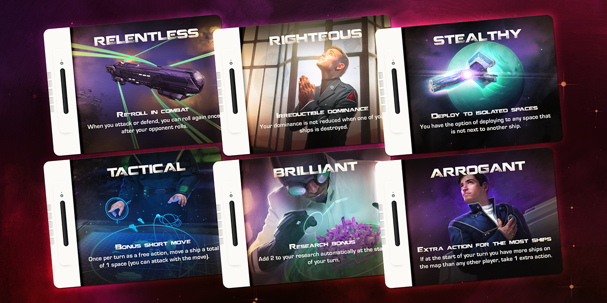
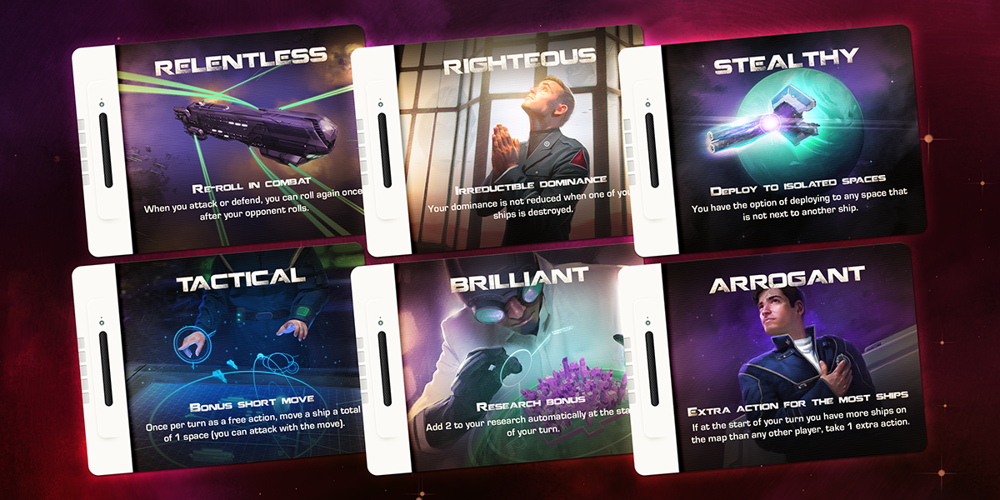
context: MIT Press
tags: Books, Writing
context: MIT Press
tags: Books, Writing
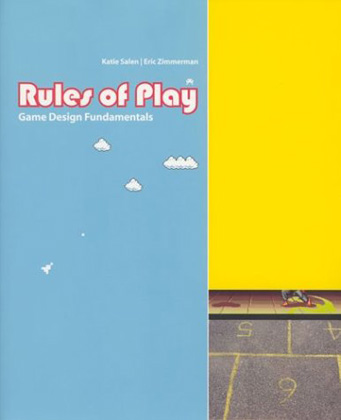context: Word.com
tags: Digital Games
 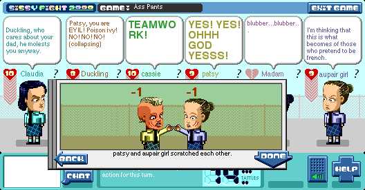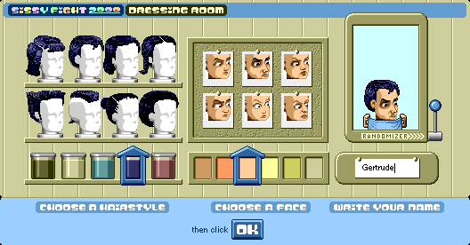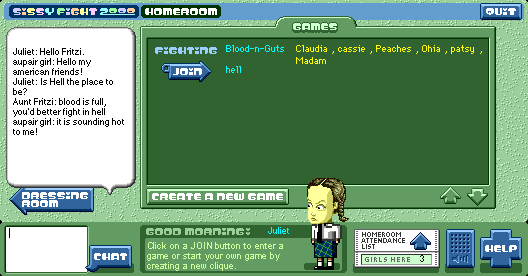
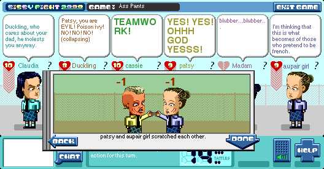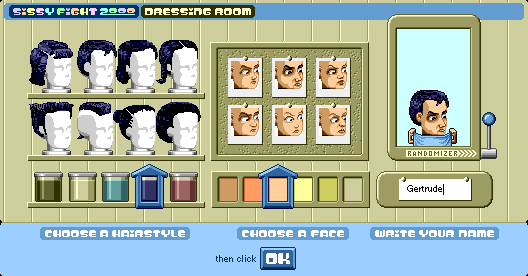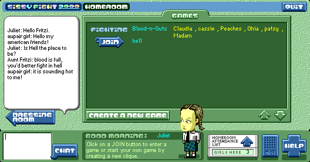context: Multiple
tags: Installations
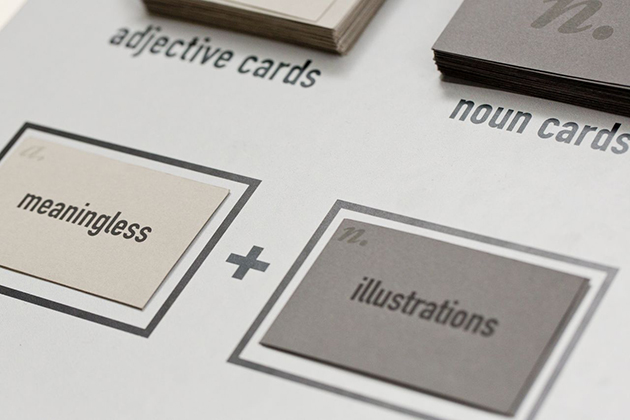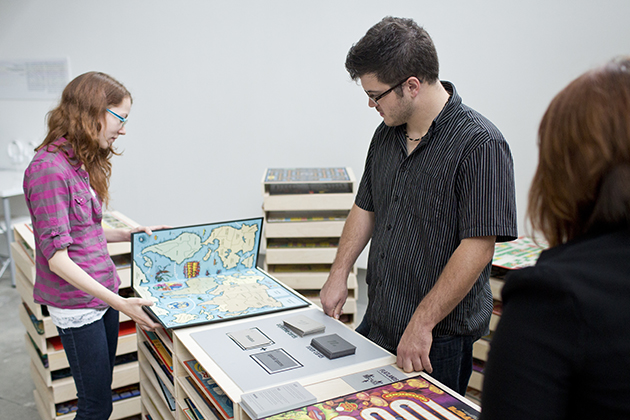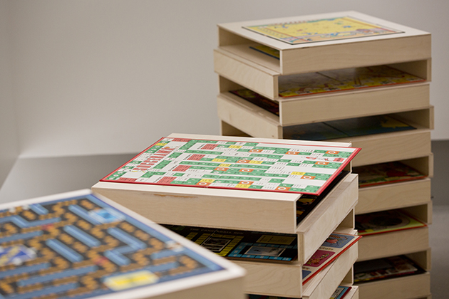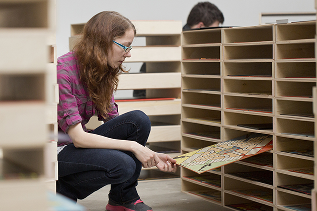